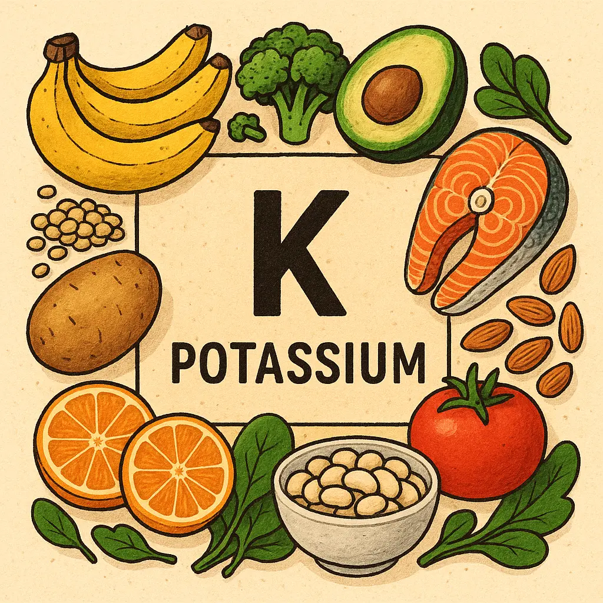

🥦 Verduras y hortalizas
Este grupo es de los más ricos en potasio y saludable para destacar.
- Espinacas (cocidas): ~558 mg
- Acelgas (cocidas): ~549 mg
- Patatas (cocidas con piel): ~535 mg
- Zanahorias (crudas): ~320 mg
- Brócoli (cocido): ~293 mg.
¡Hola! Soy el potasio, un mineral esencial que ayuda a que tus músculos, nervios y corazón funcionen bien. Me puedes encontrar en frutas deliciosas como el plátano, la naranja, el aguacate y las fresas. Cada vez que me consumes, te ayudo a mantener el equilibrio de los líquidos en tu cuerpo y a sentirte con más energía. ¡No me olvides, me necesitas más de lo que crees!
Haz click aquí para comenzar y ver dónde me puedes
encontrar

Este grupo es de los más ricos en potasio y saludable para destacar.
Algunas frutas son fuentes destacadas, especialmente las tropicales.
Menos potasio que vegetales, pero siguen siendo relevantes, sobre todo para quienes no consumen muchas verduras.